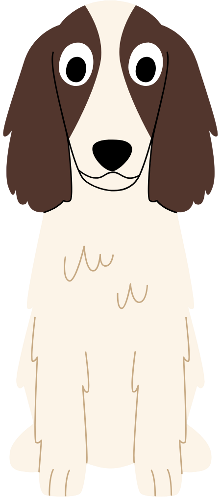
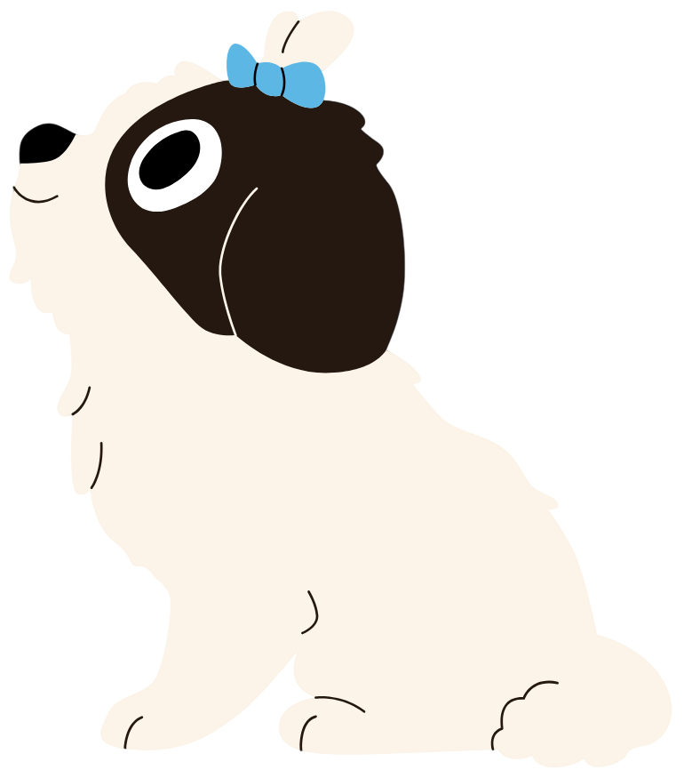

Our Purpose
DogGo! is a mobile app prototype designed to make dog walking easier, more enjoyable and rewarding. It helps dog owners discover local parks, dog off-leash areas, walking trails and drinking fountains around Brisbane.
Users can also explore dog walking routes and earn rewards by completing walks. These rewards can then be used to customise their virtual dog avatar.
By combining walking activities, rewards and avatar customisation, we aim to encourage regular physical activity and make dog walking a more engaging experience for both owners and their dogs.
Meet Our Team (as dogs?)
 Andy
Andy
 Cara
Cara

Jayden
AngelicaOur Approach
We believe dog walking should be enjoyable for both dogs and their owners. Our approach is to combine useful location information with interactive features that encourage users to stay active.
We also aim to present external data clearly and acknowledge its limitations, allowing users to make their own decisions about suitable locations and activities.
Data Assumptions and Disclaimers
Our application uses external datasets to provide information about dog walking locations in Brisbane. However, the map initially displays a selection of available records rather than every location.
Location information may change over time. Users should check local signage, park regulations and facility availability before visiting.
Walking routes and activity recommendations may not be suitable for every dog. Individual needs can vary depending on factors such as age, size and health.
The application requests location permission when users select the location feature. Before permission is granted, the map displays a default location.
Walking directions are provided through Google Maps. DogGo! does not calculate these routes independently.
Data Sources and Acknowledgements
We acknowledge the following resources used in developing DogGo!:
- Brisbane City Council Open Data for location information.
- Leaflet for interactive map functionality.
- OpenStreetMap for base map tiles.
- Google Maps for external walking directions.
- Canva. Aira Borja (2025) for dog avatar images (Input code "set:nAFdtmR6ZWw" within Canva vectors)
External graphics and photographs, including assets sourced from Canva and Pexels, are acknowledged on the relevant pages where they are used.